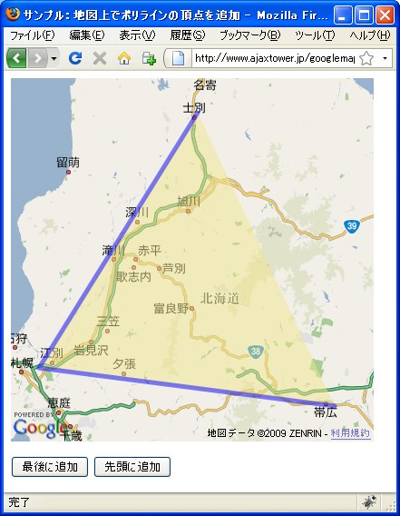
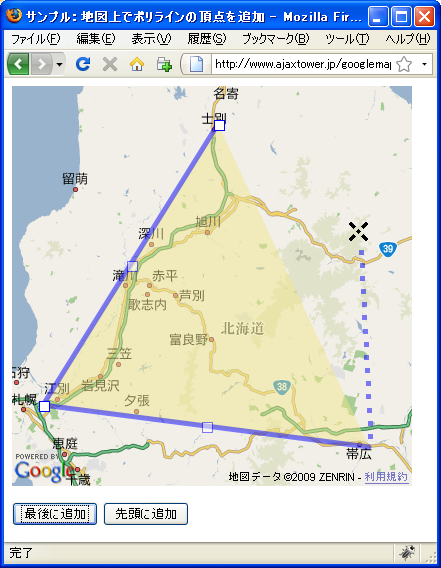
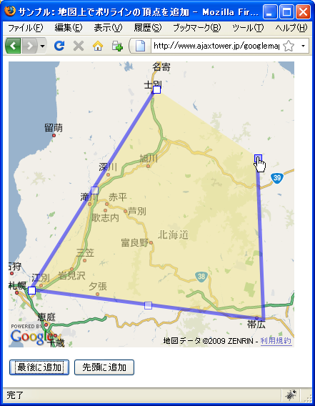
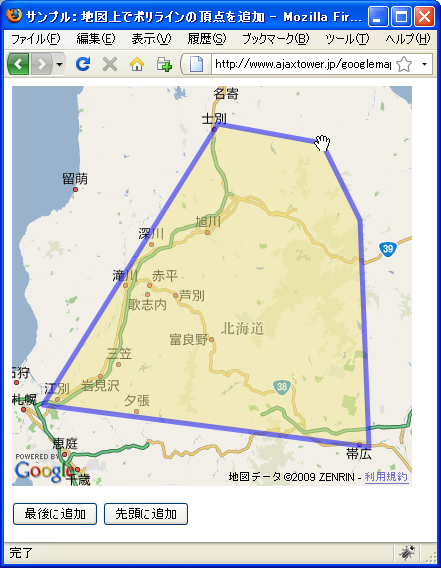
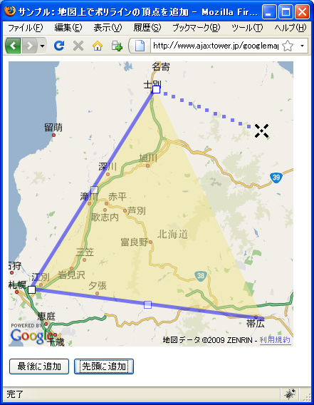

地図上でポリゴンの頂点を追加
地図上に表示されたポリゴンに地図上で頂点を追加する表示する方法を確認します。polygonクラスで用意されているenableDrawingメソッドを使います。
enableDrawing(opts?:GPolyEditingOptions)
ユーザーが、地図上の追加ポイントをクリックして GPolygon オブジェクトを構 築できるようにします。GPolyline は、ポリラインが最初に入力されず、頂点を 含んでいなくても、既に GMap2.addOverlay() 経由で地図に追加されている必要 があります。クリックするたびに「頂点」がポリゴンの境界に追加され、ダブル クリックするか、最初のポイントを再度クリックすれば描画が終了します。最初 のポイントでは、ポリゴンが正常に完成すると、「endline」イベントがトリガ されます。正常の完成しなかった場合、「cancelline」イベントがトリガされま すが、そのポリラインが地図から削除されることはありません。
enableDrawingメソッドが実行されると、ポリゴンの最後の頂点からマウスの位置までの仮の線が表示されます。マウスを地図上の地点でクリックすると新しい頂点としてポリゴンに追加され最後の頂点からクリックした地点までの直接が追加されます。
新しい頂点が追加されると、その頂点が最後の頂点として改めてマウスの位置までの仮の線が引かれこれが繰り返されていきます。頂点の追加を終了するには地図のいずれかをダブルクリックするとその地点が最後の追加頂点となります。または最後に追加した頂点の上で再度クリックしても終了となります。
頂点の追加が終了すると、最後に追加した頂点からポリゴンの最初の頂点へ線が描かれます。これによって多角形は自動的に閉じることになりますが、もし元のポリゴンが閉じた多角形だった場合には、最後の頂点と最初の頂点が同じ座標となっているはずなので多角形の頂点が増加したというよりも新しい多角形がもう一つできたようになります。
実際には次のように記述します。
var map = new GMap2(document.getElementById("map"));
map.setCenter(new GLatLng(34.98655,135.75531), 13);
var points = [
new GLatLng(34.991261,135.730076),
new GLatLng(34.997976,135.759945),
new GLatLng(34.965979,135.772219),
new GLatLng(34.991261,135.730076)
];
var polygon = new GPolygon(points, "#ff00ff", 4, 0.5, "#ff0000", 0.2);
map.addOverlay(polygon);
polygon.enableDrawing();
ポリゴンの先頭に頂点を追加
通常はポリゴンの最後に頂点が追加されていきますが、先頭に頂点を追加していくこともできます。先頭から頂点を追加するにはenableDrawingメソッドの1番目の引数で指定します。
enableDrawing(opts?:GPolyEditingOptions)
引数にはGPolyEditingOptionsクラスのオブジェクトリテラルを指定して下さい。使用するプロパティ名はfromStartプロパティです。
このプロパティは、デフォルトの動作の最後からではなく、最初から enableDrawing がポイントを追加するかどうかを指定します。 値： Boolean
実際には次のように記述します。
var map = new GMap2(document.getElementById("map"));
map.setCenter(new GLatLng(34.98655,135.75531), 13);
var points = [
new GLatLng(34.991261,135.730076),
new GLatLng(34.997976,135.759945),
new GLatLng(34.965979,135.772219),
new GLatLng(34.991261,135.730076)
];
var polygon = new GPolygon(points, "#ff00ff", 4, 0.5, "#ff0000", 0.2);
map.addOverlay(polygon);
var opts = {fromStart:true};
polygon.enableDrawing(opts);
サンプルプログラム
では試してみます。
var polygon;
function initialize() {
if (GBrowserIsCompatible()) {
var map = new GMap2(document.getElementById("map_canvas"));
map.setCenter(new GLatLng(43.555018,142.386932), 8);
var points = [
new GLatLng(44.19599,142.421265),
new GLatLng(43.082931,141.459961),
new GLatLng(42.910172,143.250732)
];
polygon = new GPolygon(points, "#0000ff", 5, 0.5, "#f0e68c", 0.5);
map.addOverlay(polygon);
}
}
function addLast() {
polygon.enableDrawing();
}
function addFirst() {
var opts = {fromStart:true};
polygon.enableDrawing(opts);
}
<!DOCTYPE html "-//W3C//DTD XHTML 1.0 Strict//EN"
"http://www.w3.org/TR/xhtml1/DTD/xhtml1-strict.dtd">
<html xmlns="http://www.w3.org/1999/xhtml" xmlns:v="urn:schemas-microsoft-com:vml">
<head>
<meta http-equiv="content-type" content="text/html; charset=UTF-8"/>
<title>サンプル：地図上でポリラインの頂点を追加</title>
<script src="http://maps.google.com/maps?file=api&v=2&key=(key)&sensor=false"
type="text/javascript" charset="utf-8"></script>
<script src="./js/code7_1.js" type="text/javascript"></script>
</head>
<body onload="initialize()" onunload="GUnload()">
<div id="map_canvas" style="width: 400px; height: 400px"></div>
<form>
<p>
<input type="button" id="lastbtn" value="最後に追加" onclick="addLast()" />
<input type="button" id="firstbtn" value="先頭に追加" onclick="addFirst()" />
</p>
</form>
</body>
</html>
ではブラウザで上記のURLを見てみます。

現在は3つの頂点を順に結んだ三角形が描画されています。ただし最後の頂点として先頭の頂点を追加していませんので閉じた多角形ではありません。では地図下の「最後に追加」ボタンを押して下さい。

ポリゴンの最後の頂点から、地図上のマウスまで仮の線が表示されます。地図上の任意の位置でクリックするとその地点に新しい頂点が追加され線が引かれます。

繰り返し同じ動作を行いますので、終了したい場合には最後に追加した頂点をクリックするか、最後に追加したい地点をダブルクリックして下さい。

追加が終了すると最後に追加した頂点へ先頭の頂点から線が描かれ閉じた多角形となります。
また地図下の「先頭に追加」ボタンを押すと、ポリゴンの先頭に頂点を追加することができます。

( Written by Tatsuo Ikura )

著者 / TATSUO IKURA
初心者～中級者の方を対象としたプログラミング方法や開発環境の構築の解説を行うサイトの運営を行っています。